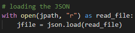
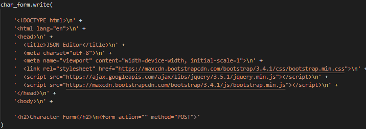
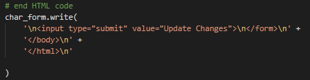

Parsing to Python
To begin conversion to a HTML form, we need to parse the JSON file into Python equivalents, such as dictionary, strings, lists etc. To do this, we create a method which takes the file path to the JSON file as a parameter. In this method, we will first load the JSON file using the file path parameter and the json.load() method, as shown below.
Writing the Form
From here, we create a text file:
This is what we will write our HTML code in. To start, we need to:
- State the doctype
- Write a header
- Open the body tag
- Have a header for the page
- Open the form tag

Naming Conventions of Elements
As you may be working with large file sizes, it is important that all your form elements have unique file names, so you don’t have any issues during conversion.
A good way to do this is to use the address, how you navigate to the value in the dictionary e.g., fruits[0][“name”], as the name of the form element. There are many advantages to this such as:
- It can be used universally for any JSON file
- It is very descriptive and shows the address of the value
- It will help when you are converting the form back into JSON syntax
There are other ways such as finding specific IDs, but these wouldn’t be as useful to other users.
You will also need to escape special characters so that no errors occur in the HTML code. To do this I used ord() and chr() to replace the special characters with their unicode value. This has worked well so far for me, so I expect it will work for you too.
Extracting Information
To extract information, I used a recursive method which has parameters:
- js = a JSON dict or an element of the dict
- char_form = the file we are writing the HTML code to
- path = the dict path to the element we are currently at
- label = the name of the element we are currently at
Converting Dict and List to Elements
The conversion of dict and list is very similar, for both we open a new div tag to separate it from the
previous section, then we iterate through each element of the dict/list passing the element as a parameter
to our instance checker and passing it to the correct method for conversion.
Example:
Converting Str and Int to Elements
Like before, the conversion of str and int is very similar. The only difference being that we need to cast
the int value to str to write it to the text file. Once we have passed the str/int element to the appropriate
method, we create a label for the input type using the parameter “label” as the label value. From here, we get
the length of the “js” value and according to this length, we either create a text box, for a smaller value, or
a text area, for a larger value. In this text box/area, we use “js” as the value. For both the label and text
box/area, we need to make sure we have “name” and “id” attributes. The values of both being the path to the
element we discussed earlier.
Example:
Finishing Writing
Once we have converted all elements of the JSON dict into HTML form code, we need to finish the HTML code. To do this, we add a “submit” input for submitting the form, then we close the form, body, and html tags. Now we have a full page of HTML code ready to display.
Flask
To display our HTML code, we use Flask, a micro web framework written in Python. It’s easy to download. Go to the terminal of your computer, into the environment you’re working in (check vs code) and type:
Now, we need to create a program which will run the Flask web server. Here is an example. All you will need to do is download the example, replace “formalise” with the module your converter is in and replace the file path with the path to your JSON file. Once it is up and running, you should be able to view your form. In the next section we will see how we parse the feedback.